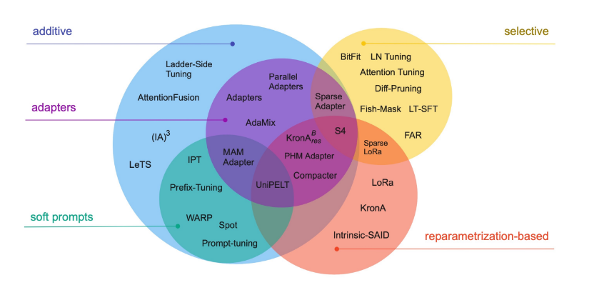

flowchart LR
A(["Raw Text Data
(Web, Books, Wikipedia)"]) -.-> B{{Pre-training}}
B --> C((Base LLM))
D(["Domain-Specific Dataset"]) -.-> E{{Fine-tuning}}
C --> E
E --> F((Fine-Tuned LLM))
%% Style assignments
class A,D Sky;
class B,E Ash;
class C,F Aqua;
%% Style definitions
classDef Sky stroke-width:1px, stroke:#374D7C, fill:#E2EBFF, color:#374D7C;
classDef Ash stroke-width:1px, stroke:#999999, fill:#EEEEEE, color:#000000;
classDef Aqua stroke-width:1px, stroke:#46EDC8, fill:#DEFFF8, color:#378E7A;
Fine Tuning
Introduction to Model Fine-Tuning
What is Fine-Tuning?
To understand fine-tuning, it helps to first understand the lifecycle of large language models (LLMs). Most LLMs begin with a stage called pre-training, where the model is trained from scratch—starting with random weights—on massive datasets that include internet text, books, Wikipedia, and other publicly available sources. This stage is incredibly compute-intensive, often requiring billions of tokens and weeks or months of training time. The goal of pre-training is to help the model learn general language patterns, reasoning skills, and world knowledge—but not to specialize in any particular task.
Once pre-training is complete, the result is a general-purpose model (often called a base model or foundation model) that understands language broadly but lacks domain-specific expertise or task-level optimization. This is where fine-tuning comes in.
Fine-tuning is the process of taking this pre-trained model and training it further on a much smaller, specialized dataset tailored to a particular use case. This could include customer support transcripts, legal documents, or medical notes—whatever matches the target application. Instead of learning from scratch, the model starts with a strong foundation and simply adjusts its weights to better perform in your desired domain or task.
Compared to pre-training, fine-tuning is faster, more affordable, and highly targeted. It allows organizations to unlock the power of large models without the immense cost of building them from the ground up.
A useful analogy is training a college graduate for a new job. Pre-training is like sending someone through years of general education: they learn how to think, write, and analyze problems across many subjects. They graduate with broad knowledge but no experience in your specific company or domain.
Fine-tuning is like giving that graduate a few weeks of onboarding and role-specific training. You teach them your tools, your customers, your terminology. You don’t need to re-teach the fundamentals—they already have them. You’re simply refining their knowledge so they can do your job well.
Check Your Understanding
What does it mean to train?
To train a language model means to adjust the internal parameters (called weights) of a neural network so it improves at predicting or generating language.
Instead of just telling the model what to do with a prompt, training actually shows the model what to do—by providing many examples of input and output pairs. Training bakes those patterns into the model itself. After training, the model doesn’t just follow instructions temporarily; it has learned new behavior permanently.
This is typically done using gradient descent, a process that compares the model’s prediction to the correct output, calculates the loss (error), and then updates the weights to reduce that loss in future predictions.
Example:
If the model sees the prompt *“The capital of France is ___“* and predicts “Berlin”, the loss will be high. The model then adjusts its internal weights to make “Paris” more likely next time.
We will discuss training loss further in a later section when we prepare to fine-tune our own model.
What are the key differences between pretraining and fine-tuning?
| Aspect | Pretraining | Fine-Tuning |
|---|---|---|
| Starting Point | From scratch (random weights) | From a pretrained model (existing weights) |
| Dataset Size | Massive (web-scale data) | Small and domain/task-specific |
| Objective | Learn general language/world patterns | Specialize for a narrow use case |
| Compute Cost | Extremely high (weeks of GPU time) | Relatively low (hours or days) |
Remember: Pretraining is about learning language. Fine-tuning is about learning your task.
Benefits and Uses of Fine-Tuning
Fine-tuning is a powerful tool for making large language models more useful, focused, and efficient. It allows organizations to adapt general-purpose models to their specific needs, tasks, and data. Below are four of the most important reasons organizations choose to fine-tune their models:
1. Cost-Effective and Compute-Efficient
One of the primary benefits of fine-tuning is the significant reduction in both computational resources and ongoing API costs. Training a model from scratch requires vast amounts of data and compute, which can be prohibitively expensive. But even using hosted APIs from providers like OpenAI or Anthropic can become expensive at scale—especially if your application makes frequent or complex calls.
Fine-tuning an open-source model gives you long-term cost control by allowing you to host the model yourself and avoid usage-based API billing. By starting with a pretrained model—which has already learned general patterns and language structure—you can adapt it to your specific needs using relatively little data and compute.
This is especially valuable for startups, research teams, or smaller organizations looking to deploy models efficiently without relying on expensive external infrastructure.
2. Domain Adaptation and Task Specialization
Pretrained models are generalists: they understand language broadly, but they’re not experts in your specific domain. Fine-tuning allows you to specialize a model for a particular task (e.g., summarization, classification) or domain (e.g., legal, medical, education).
By training on examples from your target use case, the model learns domain-specific terminology, writing styles, and reasoning patterns. For example, a model fine-tuned on customer reviews can learn to detect nuanced sentiment more effectively than a generic model.
In many cases, a small fine-tuned model can outperform a much larger generalist LLM on a specific task. This results in faster inference, lower latency, and more relevant responses—even with far fewer parameters.
3. Control Over Behavior
Prompt engineering and retrieval techniques can guide what a model talks about, but they don’t fundamentally change how it reasons, responds, or formats answers.
Fine-tuning gives you much greater control over:
- The tone and style of responses (e.g., friendly, formal, concise)
- The model’s workflow and logic, such as following step-by-step reasoning
- The consistency of outputs across prompts and users
This is how companies train AI to stay on-brand, follow safety guidelines, or mirror specific writing styles.
4. Privacy and Security
When working with sensitive or proprietary data, fine-tuning provides a way to embed that knowledge into the model without exposing it to external APIs.
Key benefits include:
- Data remains in-house — fine-tuning can be done on private infrastructure
- No need to send sensitive context repeatedly via prompts
- Enables informed generation using non-public or confidential information
This is critical for applications in healthcare, finance, government, and enterprise, where data privacy and compliance are essential.
Challenges and Limitations of Fine-Tuning
While fine-tuning can unlock powerful performance gains and customizations, it also comes with tradeoffs. Before deciding to fine-tune, teams should consider the limitations, risks, and operational challenges involved:
1. Requires Technical Expertise and Infrastructure
Fine-tuning is not as plug-and-play as prompt engineering or API-based solutions. It requires:
- Knowledge of machine learning workflows and frameworks (e.g., Hugging Face, LLaMA Factory)
- Access to GPUs or specialized infrastructure
- Ability to preprocess data, manage training loops, and troubleshoot errors
This complexity can be a barrier for teams without dedicated ML or MLOps support.
2. Maintenance and Drift
Once you fine-tune a model, you own the lifecycle—including:
- Monitoring for performance drift as real-world data changes
- Updating the model with new examples or edge cases
- Managing versioning, rollback, and deployment
This adds long-term operational overhead compared to hosted APIs that automatically improve over time.
3. Data Collection and Labeling Cost
High-quality fine-tuning depends on well-labeled, task-specific data. But collecting this data can be:
- Expensive (e.g., hiring annotators)
- Time-consuming (especially for edge cases or nuanced outputs)
- Inconsistent (if labeling guidelines aren’t followed strictly)
Small datasets can still be effective, but their quality matters more than their size.
4. Limited Transferability
A model fine-tuned for one domain or task may not generalize well to others. Unlike prompt-based approaches that can reuse the same model across many tasks, fine-tuned models tend to be narrowly specialized.
This can require maintaining multiple models or fine-tuning different variants for each use case, adding complexity to your AI stack.
In summary, fine-tuning is a critical technique for turning general-purpose language models into strategic AI solutions. It allows organizations to adapt pretrained models to their specific domains, tasks, and privacy constraints—enabling cost savings, improved performance, brand consistency, and secure handling of proprietary data. This makes fine-tuning especially valuable for teams that need deeper customization beyond what prompt engineering or retrieval-based methods can provide. However, it comes with meaningful tradeoffs: fine-tuning requires technical expertise, high-quality labeled data, and long-term model maintenance. When used thoughtfully, fine-tuning offers powerful returns—but should be weighed against its complexity and cost relative to lighter-weight alternatives.
Comparison: Prompt Engineering vs RAG vs Fine-Tuning
| Criteria | Prompt Engineering | RAG | Fine-Tuning |
|---|---|---|---|
| Ease of Deployment | High | Medium | Low |
| Domain Adaptation | Low | High | High |
| Factual Accuracy | Low | High | Moderate (static) |
| Control over Output | Limited | Moderate | High |
| Privacy-Friendly | High | Moderate (depends) | High |
| Supports Dynamic Content | Low | High | Low |
| Low Latency / Offline Use | Low | Moderate | High |
| Consistency / Repeated Tasks | Low | Medium | High |
| Upfront Effort | Low | Medium | High |
Use this table to compare the tradeoffs between Prompt Engineering, Retrieval-Augmented Generation (RAG), and Fine-Tuning depending on your use case.
How Fine-Tuning Works: A Roadmap
In order to fine-tune our own language model, we will walk through the following steps:
Choose a Base Model
Select a pre-trained model that aligns with your task needs (e.g. LLaMA, Mistral, Falcon).Prepare a Specialized Dataset
Gather and format examples specific to your domain or task. The quality of this data will directly shape the model’s behavior.Choose a Fine-Tuning Approach: Technique + Framework Decide whether to fully fine-tune the model or use a parameter-efficient method like LoRA, QLoRA, or adapters.
Set Training Arguments (Hyperparameters)
Choose your learning rate, batch size, number of epochs, and other settings that influence how the model learns.Train, Iterate, and Evaluate
Begin training, monitor the loss, validate the model, and adjust as needed. Use benchmarks and real-world testing to assess performance.
We’ll walk through each of these steps in the sections that follow.
1) Choose a Base Model
The first decision in any fine-tuning project is selecting a base model—the pre-trained large language model (LLM) you will adapt for your task. Your choice here impacts everything downstream: performance, cost, deployment complexity, techniques/frameworks, and even data formatting.
There is no one-size-fits-all answer. Here are the main criteria to guide your decision:
Model Size (Number of Parameters)
One of the first and most fundamental choices when selecting a base model is its size—typically measured by the number of parameters it contains.
Larger models (typically >7B parameters) can capture more complex language patterns, reason more deeply, and perform better across a wide range of tasks. However, this power comes at a cost: they require significantly more compute, memory, and training time. They are best suited for high-stakes tasks or enterprise-grade applications with strong infrastructure.
Smaller models (typically 1–3B parameters) are much easier to fine-tune on consumer-grade hardware. They train faster, cost less to deploy, and are ideal for lightweight or domain-specific use cases—like customer service chatbots, internal tools, or embedded AI assistants.
Rule of thumb:
Choose the smallest model that can still meet your task’s performance needs. For many real-world applications—especially in narrow domains—small and medium models can be surprisingly capable when fine-tuned correctly.
| Model Size | Parameter Range | Use Case Fit |
|---|---|---|
| Small | ~1B–3B | Fast prototyping, edge devices, low-latency apps |
| Medium | ~3B–7B | Balanced performance vs. compute cost |
| Large | >7B | High accuracy, broader generalization |
Pre-Trained vs Instruction Tuned
The process of fine-tuning often happens in stages. You don’t always need to start from a raw, base model. Some models have already gone through a form of fine-tuning specifically designed to help them follow human instructions—this is called instruction tuning. The result is an instruction-tuned model, which is better suited for tasks like responding to prompts in a chatbot or assistant-like manner.
Instruction-tuned models are typically the best choice when building for real-world use cases like chat, summarization, or customer support. Because they already understand how to follow instructions, they require less effort and data to fine-tune effectively. Base (pretrained) models, on the other hand, offer more flexibility and control, but require more work—such as formatting data carefully, defining tasks explicitly, and teaching the model how to respond appropriately from scratch.
Licensing and Commercial Use
One of the most overlooked—but critical—factors when selecting a base model is its license. Not all open-source models are truly open for commercial use.
Some models, like Meta’s LLaMA 2, are released under non-commercial research licenses. This means you can experiment, research, and even fine-tune them—but you cannot deploy them in a commercial product without explicit permission. In contrast, models like Mistral, Qwen, or Falcon often use more permissive licenses (e.g., Apache 2.0), allowing full commercial use, redistribution, and modification.
Licensing directly impacts your go-to-market options:
- If you’re prototyping an internal tool or doing academic research, a research-only license may be acceptable.
- But if you’re building a product, deploying to customers, or embedding the model in a commercial offering, using a model with commercial restrictions could put you at legal risk.
Always check the model’s license (typically found on Hugging Face or GitHub) before beginning fine-tuning. Licensing restrictions often apply not just to the base model but also to any fine-tuned derivatives.
Model Compatibility and Alignment
Choosing a base model isn’t just about performance — it determines how you’ll train, fine-tune, and work with the model going forward. Each model family (like LLaMA or Mistral) comes with its own expectations and requirements, which will shape every step of your fine-tuning pipeline.
Choosing a model is like choosing a device with a specific charging port. Once you commit, all your cables, adapters, and accessories need to match. Some models work seamlessly with common tools—others may need extra setup or won’t be compatible at all
Here are four key things your model choice affects. These topics will be covered more in-depth later in this chapter:
1. Tokenizer
Every model processes text using a tokenizer — a way of breaking sentences into chunks (called tokens) that the model understands. Each model family has its own tokenizer, and they aren’t interchangeable. Once you pick a model, you’re locked into its tokenizer for both training and inference.
2. Data Format
Different models expect training data (input and output pairs) to follow specific formats. If your data format doesn’t match what the model expects, it won’t learn effectively.
3. Frameworks
Frameworks are the tools you use to fine-tune a model. Examples include LLaMA Factory, Hugging Face Trainer, and Axolotl. Each framework only supports certain model types, file structures, and features. If your chosen model isn’t supported by your preferred framework, you’ll either have to switch tools or make significant customizations.
4. Techniques
Fine-tuning techniques—like LoRA, QLoRA, and full fine-tuning—vary in how they update the model’s weights and how much compute they require. Some models are optimized for lightweight, efficient techniques like LoRA; others may require full fine-tuning to see meaningful improvements. Your model choice can limit or enable which approaches are available.
Together, these form a kind of alignment: the better your tools, data, and training method match the structure and expectations of the model, the smoother your fine-tuning process will be—and the better your results.
In the next sections, we’ll walk through how to prepare aligned data for your model and choose the training method that best fits your use case and enhances training speed and efficiency.
2) Data Preparation for Fine-Tuning
Fine-tuning is fundamentally a form of supervised learning — teaching a model by showing it many examples of inputs paired with ideal outputs so it learns to replicate those patterns. This section walks through the three core stages of data preparation: sourcing, cleaning, and formatting.
Supervised vs. Self-Supervised Learning
Pre-training uses self-supervised learning, where the model learns from raw text by predicting missing parts—no labeled answers are provided.
Fine-tuning uses supervised learning, where each example has a clearly defined input and target output. This means your data must be formatted with both parts: what the model should see, and what it should generate.
The structure of your dataset—input → output—is what makes fine-tuning supervised.
Data Sourcing
The first step is identifying where your task-specific data will come from. Common sources include:
- Internal logs – e.g., customer support transcripts, chatbot conversations, or form submissions
- Public datasets – from platforms like Hugging Face Datasets, Kaggle, or academic benchmarks
- Manual generation – examples written or annotated by domain experts
- Synthetic generation – data generated by an LLM and later reviewed or edited for quality
Fine-tuning doesn’t require massive datasets. What matters is that each example is correct, relevant, and representative. A few hundred high-quality examples often outperform thousands of noisy ones.
The most important thing is that the data reflects the task and tone you want the model to learn. If you’re building a customer support assistant, use examples from real interactions. If you’re building a tutor, use educational prompts and responses.
Data Cleaning
Raw examples often need cleaning before they’re ready for training. This step focuses on eliminating noise and inconsistencies. Common cleaning tasks include:
- Removing incomplete or corrupted entries
- Fixing typos, inconsistent punctuation, or formatting issues
- Standardizing casing, spacing, or syntax
- Removing sensitive or personally identifiable information (PII)
Clean data helps ensure the model learns meaningful patterns—not accidental ones.
Data Formatting
Regardless of the task, all fine-tuning datasets must include a clear prompt (or context) and a desired response. However, the format of this information depends on the model architecture and training history.
Below are the most common and important formats in modern fine-tuning workflows—each suited to different use cases.
Data is usually stored in JSON or JSON Lines (JSONL) formats.
Common Data Formats
Instruction Format (
instruction → input → output)
Best for: Task-specific fine-tuning like summarization, translation, classification, and question answering Model types: FLAN-T5, Alpaca, LLaMA Factory-compatible models
{
"instruction": "Translate this sentence to Spanish.",
"input": "How are you?",
"output": "¿Cómo estás?"
}
Chat Format (
messages list)
This format simulates a conversation between a user and an assistant over multiple dialogue turns. Useful for fine-tuning chat-style models that require conversational memory and role-awareness.
Best for: Best for: Chatbots, AI assistants, and multi-turn conversational agents Model types: LLaMA-2-Chat, Mistral-Instruct, OpenChat, ShareGPT-style models
{
"conversations": [
{ "role": "user", "content": "How do I reset my password?" },
{ "role": "assistant", "content": "Go to Settings > Account > Reset Password and follow the instructions." },
{ "role": "user", "content": "Thanks!" },
{ "role": "assistant", "content": "You're welcome!" }
]
}
Prompt-Completion Format (
prompt → response)
Best for: Simple, single-turn generation tasks like content generation, Q&A, or creative writing
Model types: GPT-2, Mistral (base), Falcon, and other decoder-only models
{
"prompt": "Write a tagline for a fitness app:",
"response": "Train smart. Live strong."
}
Classification Format (
text → label)
Best for: Sentiment analysis, topic detection, intent classification, and other labeling tasks
Model types: BERT-style models, RoBERTa, and decoder models fine-tuned for classification
{
"text": "The interface was slow and hard to use.",
"label": "negative"
}Summary
The format of your dataset is just as important as its content. A model can only learn effectively if examples are structured in a way it understands. Fine-tuning isn’t just about feeding the model data—it’s about providing clear, consistent demonstrations of the behavior you want it to learn. Whether you’re training a chatbot, an instruction-follower, or a classifier, you need to choose a format that aligns with your model’s architecture and training history. Clean formatting ensures the model can focus on learning patterns—instead of being confused by structure.
3) Techniques and Tools for Fine-Tuning
Once you’ve chosen your base model and prepared your dataset, the next step is deciding how you’ll fine-tune it. This involves two key decisions:
- Technique — What kind of fine-tuning method will you use? (e.g., full fine-tuning, LoRA)
- Tools (Frameworks) — Which tool or codebase will you use to apply that method? (e.g., LLaMA Factory, Hugging Face)
Both choices depend on your goals, model size, and available compute.
Fine-Tuning Techniques
Fine-tuning techniques define how much of the model gets updated during training—and how efficiently that update process can be done.
There are many emerging strategies in this space, and the field continues to evolve rapidly. For the scope of this course, we’ll focus primarily on full parameter fine-tuning and PEFT methods (LoRA and QLoRA).
Full Parameter Fine-Tuning
Full parameter fine-tuning involves updating all of the weights in the model during training. This gives you maximum control and flexibility—you can adapt the model deeply to a new domain or task.
However, it comes at a cost: full fine-tuning is compute-intensive, memory-heavy, and often requires high-end GPUs. It also risks overfitting if your dataset is small.
Because of these tradeoffs, full fine-tuning is typically used when:
- You have access to strong infrastructure (e.g., multi-GPU or cloud clusters)
- You’re working with a small model (e.g., under 1B parameters)
- You need to significantly change the model’s behavior
For most use cases, PEFT methods offer similar performance with far fewer resources.
Parameter Efficient Fine-Tuning (PEFT)
PEFT is an umbrella term for many techniques allow you to fine-tune large models by updating only a small number of parameters, rather than the entire model. This makes training much faster, less memory-intensive, and possible on consumer-grade hardware.
Instead of modifying all the weights, PEFT methods freeze the original model and train small, added components—like adapter layers or low-rank matrices—that learn task-specific behavior.
In this course, we’ll focus on one of the most widely used PEFT technique: LoRA (Low-Rank Adaptation), which uses lightweight matrix updates to adapt the model efficiently while keeping the original weights frozen.

Low Rank Adaptation (LoRA)
LoRA (Low-Rank Adaptation) is a clever way to fine-tune large language models without changing most of their weights.
Instead of updating all the millions (or even billions!) of parameters in a model, LoRA adds a few small, trainable layers that sit inside the existing model architecture. During training, only these small layers are updated, while the original model remains frozen. This makes training faster, cheaper, and requires much less memory.
Think of it like adding a few adjustable knobs to an already well-built machine, instead of rebuilding the entire machine from scratch.
Quantized Low Rank Adaptation (QLoRA)
While LoRA dramatically reduces the number of parameters you need to train, the base model (like LLaMA or Mistral) still takes up a lot of memory. That’s where QLoRA (Quantized LoRA) comes in.
QLoRA keeps everything that makes LoRA efficient—but adds quantization to reduce the memory footprint of the base model itself. This makes it possible to fine-tune large models even on laptops or free Colab GPUs.
What is Quantization?
Quantization is a way of making a model smaller by storing its weights using fewer bits.
Most models use 16-bit or 32-bit floats to store numbers.
QLoRA uses 4-bit integers, which are much smaller.
This doesn’t change the model’s structure—it just changes how the numbers are stored in memory.
It’s like switching from a high-resolution video to a compressed version that still looks good—but takes up less space.
For a deeper understanding of LoRA and QLoRA, watch this video.
Fine-Tuning Tools (No-Code to Low-Code)
If you’re just getting started or want to fine-tune without writing a lot of code, the following tools offer simple, powerful interfaces:
OpenAI Platform
A hosted solution for fine-tuning OpenAI models like gpt-3.5-turbo. You upload your training data, and OpenAI handles the rest. No infrastructure or model setup needed.
Pros: Easy to use, fully managed, excellent for production-ready APIs
Cons: Only supports OpenAI models (not open-source), limited customization
Hugging Face AutoTrain
A no-code/low-code tool for training and fine-tuning Hugging Face models using your own data. Supports classification, summarization, instruction tuning, and more.
Pros: Very user-friendly UI, supports both public and private models
Cons: Less control than coding directly with the Transformers library
LLaMA-Factory
A lightweight framework (requires Python) for fine-tuning open-source models like LLaMA, Mistral, and Qwen. Supports LoRA, QLoRA, and other efficient training methods.
Pros: High flexibility, supports many models and fine-tuning strategies
Cons: Requires setup and command-line use
4) Training Arguments and Hyperparameter Optimization
When fine-tuning a language model, you need to configure how the training process will run. These configurations are called hyperparameters. Hyperparameters are like settings or dials that you tune before training begins. They define how the model learns, how fast it learns, how long it trains, and how much data it sees at a time. Choosing the right hyperparameters is critical to getting good result. If they’re set poorly, the model may underfit (learn too little) or overfit (memorize the data instead of generalizing). Good choices help the model learn effectively and perform well on new data.
Below are the most important hyperparameters you’ll encounter when fine-tuning a language model. For each, we define what it is, how it affects the training process, and provide common values.
1) Learning Rate
Definition:
Controls how much the model’s weights are adjusted with each training step.
Effect on Training:
- Too high → unstable training, poor convergence
- Too low → slow learning or getting stuck in suboptimal solutions
Common Values:
1e-5, 2e-5, 5e-5, 1e-4, 2e-4
(LoRA/QLoRA often use 1e-4 to 2e-4)
2) Number of Epochs
Definition:
The number of times the model iterates over the entire training dataset.
Effect on Training:
- More epochs → more learning opportunity
- Too many → overfitting on small datasets
Common Values:
1, 2, 3 (up to 10 for small datasets)
3) Batch Size
Definition:
Number of training examples processed simultaneously per GPU.
Effect on Training:
- Larger batch size → faster training, more stable gradients
- Smaller batch size → lower memory usage (can be paired with gradient accumulation)
Common Values:
2, 4, 8, 16
(LoRA/QLoRA typically use 2 or 4)
4) Gradient Accumulation Steps
Definition:
Delays weight updates by accumulating gradients over multiple mini-batches.
Effect on Training:
- Simulates a larger effective batch size without needing more memory
- Helps stabilize training with small per-device batch sizes
Example:
Batch size 2 + accumulation 4 = effective batch size 8
Common Values:
1, 2, 4, 8
5) Cutoff Length
Definition:
Maximum number of tokens used from each input during training.
Effect on Training:
- Longer inputs = more context, but higher memory usage
- Shorter inputs = lower memory usage, but possible information loss
Common Values:
512, 1024, 2048
6) Validation Size
Definition:
Percentage of data reserved for validation (not used in training).
Effect on Training:
- Enables tracking of model performance during training
- Helps detect overfitting
Common Values:
0.05, 0.1, 0.2
(Set to 0 to disable validation)
Understanding these hyperparameters—and adjusting them thoughtfully—can dramatically improve the results of your fine-tuning runs.
Summary Table
| Hyperparameter | What It Controls | Why It Matters |
|---|---|---|
learning_rate |
How quickly the model updates its weights | Too high: unstable training; too low: slow or no learning |
num_train_epochs |
How many times the model sees the full dataset | More epochs = more learning, but also risk of overfitting |
per_device_train_batch_size |
How many examples the model processes at once | Larger batches are faster but use more memory |
gradient_accumulation_steps |
Simulates larger batches over multiple steps | Useful when memory is limited |
cutoff_len |
Maximum number of tokens per example | Truncates long inputs; controls memory usage |
val_size |
Portion of data used for validation (e.g., 0.1) | Helps track performance on unseen data |
In summary, hyperparameters are not learned during training—they’re chosen by you before training begins. The ideal values depend on several factors, including your model size, dataset, available hardware, and specific goals. Fortunately, you don’t have to guess: most tools offer solid default settings, which you can use as a starting point and adjust based on your results.
5) Evaluating Training with the Loss Curve
When fine-tuning a model, one of the simplest and most useful diagnostic tools is the loss curve—a plot of the model’s training and validation loss across training steps. It gives you direct feedback on how well your model is learning and whether it’s likely to generalize to new data.
Understanding Loss
During training, your model tries to minimize the loss—a numerical estimate of how wrong its predictions are. A lower loss means better performance on the task at hand.
However, low training loss alone is not enough. What really matters is how well the model performs on unseen (validation) data. That’s where the idea of generalization comes in.
A well-generalizing model will have both low training loss and low validation loss.
Underfitting
Underfitting occurs when the model fails to learn the core patterns in the training data. This can happen if the model is too simple, trained for too few steps, or if the data lacks clear structure.
Underfitting Loss Curve
On a loss curve, underfitting shows up as:
- High training loss that doesn’t improve much
- High validation loss that stays close to the training loss
This means the model is struggling even on the examples it has seen.
How to fix it: - Train longer (increase num_train_epochs) - Use a larger model or increase LoRA rank - Improve the quality and clarity of your dataset
Overfitting
Overfitting happens when the model learns too much from the training data—memorizing noise or quirks instead of learning generalizable patterns.
Overfitting Loss Curve
On the loss curve, this appears as:
- Low training loss
- Validation loss starts increasing after a certain point
This growing gap is called the generalization gap—it shows the model is performing worse on unseen data, even as it continues to improve on training data.
How to fix it:
- Stop training earlier (reduce
num_train_epochs) - Use regularization (e.g., dropout)
- Use a smaller model or lower LoRA rank
- Add more diverse or augmented data
A Healthy Fit (Good Generalization)
A well-tuned model finds the sweet spot: it learns useful patterns from the training data without overfitting. This is the ideal scenario for most fine-tuning tasks.
Healthy Loss Curve
On the loss curve, you’ll see:
- Training and validation loss both decrease steadily
- The two curves stay close together
- Loss values flatten as training converges
This means the model is generalizing well and ready for real-world usage.
How to maintain a good fit:
- Use early stopping
- Monitor the validation loss closely
- Regularly evaluate on real task outputs
Summary: How to Interpret the Loss Curve
| Pattern | Training Loss | Validation Loss | Model Behavior |
|---|---|---|---|
| Underfitting | High | High | Not learning enough |
| Overfitting | Low | Starts increasing | Memorizing training |
| Good Fit | Decreasing | Closely follows train | Generalizing well |
Final Tip: Don’t Just Watch the Curve
The loss curve is a powerful guide—but it’s not the whole story. After training, always evaluate your model’s outputs directly:
- Are they more accurate, helpful, or aligned?
- Can you do side-by-side comparisons with the base model?
- Does it solve the original task more effectively?
You’ll learn more about advanced evaluation techniques in a future chapter.
Conclusion
Fine-tuning is one of the most effective ways to adapt a pre-trained language model to your specific tasks, data, and goals. Unlike prompt engineering or retrieval-augmented generation, fine-tuning directly changes the model’s internal behavior—resulting in more consistent, efficient, and domain-aware outputs.
In this chapter, you’ve learned:
- What fine-tuning is and how it builds on pre-training
- Why fine-tuning matters for cost efficiency, task specialization, control, and privacy
- How to choose a base model based on size, license, and compatibility
- How to prepare data through sourcing, cleaning, and formatting
- Which techniques to use, including full fine-tuning, LoRA, and QLoRA
- How to configure training using hyperparameters
- How to evaluate training using the loss curve to detect underfitting, overfitting, or a good fit
Fine-tuning unlocks powerful customization, but it also requires aligned tools, clean data, and thoughtful training design. When done well, it can produce models that outperform much larger base models on specific tasks—using less compute and offering faster inference.